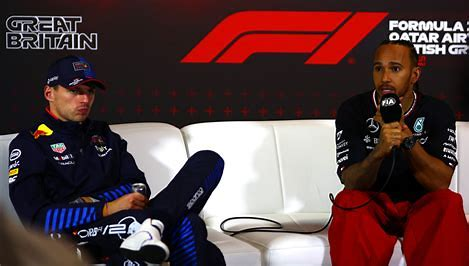
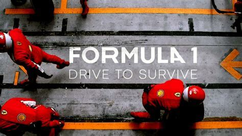

The Impact of Media on Formula One
Media has played a crucial role in shaping the public’s perception and the global reach of Formula One. Here's how media has influenced the sport:
Television and Broadcasting
The advent of television in the 1950s brought Formula One to a wider audience. Live broadcasts made it possible for fans worldwide to witness the thrills of the race. Innovations such as onboard cameras and real-time data have enhanced viewer experience and engagement.
Digital Media and Social Platforms
Platforms like Twitter, Instagram, and TikTok allow fans to engage directly with teams and drivers, fostering a global community. The rise of YouTube and streaming services has provided a platform for fan-created content, race highlights, and in-depth analysis.
Drive to Survive: Revolutionizing F1 Coverage
Drive to Survive premiered on Netflix in March 2019, offering a behind-the-scenes look at the world of Formula One. The show has been instrumental in broadening Formula One’s appeal, particularly among younger audiences and viewers who might not have previously engaged with the sport. By presenting F1 through dramatic narratives and personal stories, Drive to Survive has made the sport more accessible and engaging for a global audience. The series provides unprecedented access to team dynamics, driver rivalries, and race strategies. It has allowed fans to connect more deeply with the sport, gaining insights into the personalities and pressures faced by drivers and teams.It has successfully drawn new fans into the world of F1, contributing to the sport’s growing global fanbase.